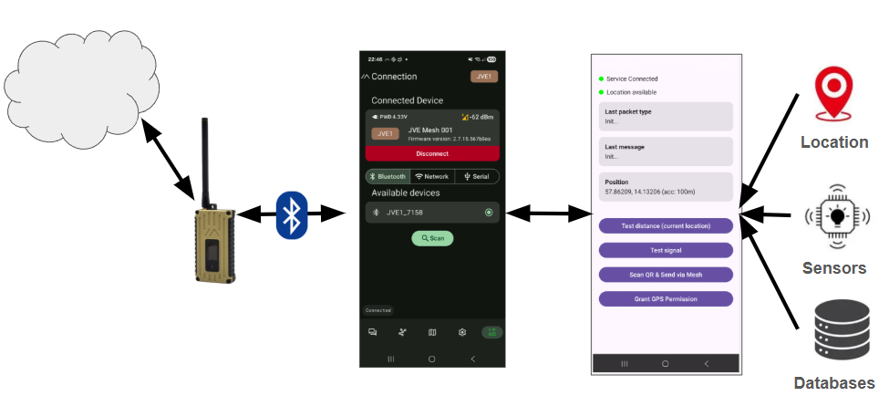

Meshtastic Android Integration
My Android MeshHelper?
Keeping Busy
For many of you who don’t know me, doing nothing is one of the scariest things I can imagine. I tend to stay busy. So over the Christmas and New Year break, with two weeks off work (and yes, spending time with family was part of the plan), the question became: what will I do next?
Over the last few months, I’ve been playing with Android application development, and naturally I started wondering how I could integrate that with my Meshtastic units. After spending a few hours reading through the Meshtastic Android code on GitHub, I came to a fairly quick conclusion: this is solid, well-written code - and I am not going to rewrite it.
Then I stumbled across a directory called
mesh_service_example.
And that’s where things got interesting.
My journey into Android Interface Definition Language - AIDL - started there.
Touching the Surface
I know this topic won’t be within everyone’s current skill set or interest (and I say current intentionally - learning to read and write code is, in my opinion, one of the most useful skills you can have). I also know that talking about Android internals can very quickly turn into bla bla bla…
So this blog only touches the surface of the topic and then points those who are curious toward a concrete proof of concept.
AIDL, in Human Terms
At some point, Android apps stop being “just an app”. They turn into systems. That’s where AIDL comes in.
AIDL is Android’s way of letting different processes talk to each other, safely and in a structured way. Not different threads, and not different screens inside one app - but different apps or services entirely.
One way to think about AIDL is as a contract:
“If you call me like this, I promise to respond like that.”
AIDL allows one app to expose a service, and another app to call methods on that service as if it were local, even though it’s crossing a process boundary. And this functionality is already exposed by the Meshtastic Android app.
Why This Matters for Meshtastic
This immediately changes what’s possible.
It means I can write a completely separate Android app that talks to Meshtastic, without modifying the official app, forking the project, or asking the Meshtastic developers to merge niche features.
In other words: experimentation can happen outside the core application - which is healthier for both developers and the community.
Enter MeshHelper
As a proof of concept, I set out to create a small companion app that could:
- Connect to the Meshtastic Android app via its AIDL service
- Show message types received from a connected Meshtastic unit
- Display incoming messages
- Obtain GPS location from the phone
- Send pre-packaged messages with a button click
- Scan a QR code and send its contents out over the mesh
- Later: integrate phone sensors
I called this tool MeshHelper (and released the repository here, please feel free to clone or fork and make it better). It’s a standalone companion app - not a replacement - designed to explore what becomes possible when Meshtastic is treated as a platform rather than just a UI.
A Concrete Example
I’ve incorporated MeshHelper into my local mesh setup, including the beacon I described in the blog “Testing My Base Node with a Python Sidekick”.
One simple example is the “Test distance” button in MeshHelper. When pressed, it creates a message like:
/distance <lat> <lon>
The latitude and longitude come from the phone’s location services (a combination of GPS, Wi-Fi, and mobile networks). That message is then sent over the mesh. When received by the mesh beacon, the beacon calculates the distance and sends a response back.
Is this groundbreaking? No. I’ve even been asked whether similar functionality already exists in Meshtastic firmware - and yes, I’m aware it does.
But this project isn’t about inventing something new. It’s about understanding how things work, learning by doing, and exploring what problems could be solved with this approach. And maybe - just maybe - showing one other person that moving from “I can’t do this” to “hey, this might actually be possible” isn’t as far a jump as it feels.
Honesty and What’s Next
If you look at the repository, you’ll quickly notice that I don’t write Android code full-time. The current solution is still a bit messy, and the integration isn’t ideal - but it works.
I genuinely enjoyed this little Christmas experiment. Next, I want to explore fusing phone sensor data with the mesh - maybe triggering messages based on movement, orientation, or something else entirely.
I don’t quite know yet. But that’s the fun part. I’ll know what it is when I see it.
Written by JohanV
2026-01-17